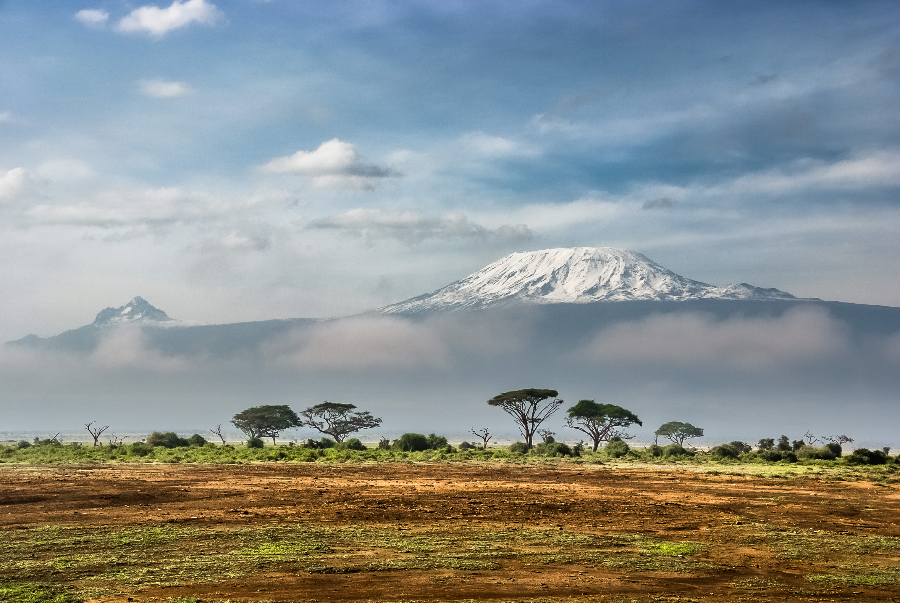

Le Kilimandjaro ou Kilimanjaro est une montagne située dans le Nord-Est de la Tanzanie et composée de trois volcans:
- le Shira à l'ouest, culminant à 3 962 mètres d'altitude
- le Mawenzi à l'est, s'élevant à 5 149 mètres d'altitude,
- le Kibo, le plus récent géologiquement, situé entre les deux autres et dont le pic Uhuru à 5 891,8 mètres d'altitude constitue le point culminant de l'Afrique
le Kilimandjaro est devenu une montagne emblématique, évoquée ou représentée dans les arts et symbolisée sur de nombreux produits à vocation commerciale.
Elle est très prisée par les milliers de randonneurs qui réalisent son ascension tout en profitant de la grande diversité de sa faune et de sa flore.
